Hasta ahora, nuestra principal preocupación como Ingenieros de Calidad era responder a la pregunta: "¿Funciona?". A partir de este momento, la pregunta cambia a: "¿Funciona bajo presión?".
Este tutorial está diseñado para establecer el vocabulario y los conceptos matemáticos que diferencian a un Tester Funcional de un Ingeniero de Rendimiento (Performance Engineer).
"Un sistema que responde correctamente, pero tarda 10 segundos en hacerlo, está funcionalmente roto para el usuario."
Todo desarrollador o QA ha dicho esta frase alguna vez. Tienes un MacBook Pro M3 o un PC Gamer de última generación, estás conectado a la red local de la oficina (Latencia < 2ms) y eres el único usuario probando la aplicación. Obviamente, todo carga al instante.
Pero el mundo real es un lugar hostil:
La Ingeniería de Rendimiento se encarga de simular este "mundo real" antes de que la aplicación salga a producción.
El rendimiento no es un concepto monolítico. Se divide en dos campos de batalla distintos, y un error común es medir solo uno de ellos.
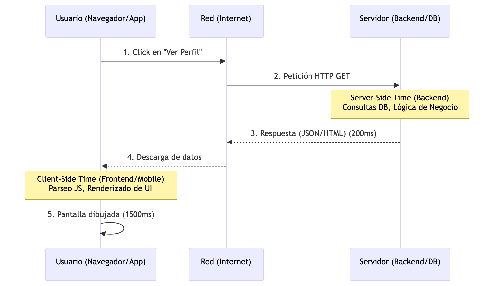
No existe una sola "Prueba de Carga". Dependiendo de lo que queramos descubrir, aplicamos diferentes perfiles de tráfico.
Para reportar problemas de rendimiento, no podemos decir "va lento". Necesitamos hablar con precisión matemática.
La Trampa del Promedio (Por qué usamos Percentiles)
Si tienes 10 peticiones que tardan 10ms y 1 petición que tarda 1000ms, el promedio es 100ms. Si le dices a tu jefe "El promedio es 100ms", él pensará que todo está bien. ¡Pero el 10% de tus usuarios esperó un segundo entero!
Por eso en QA usamos Percentiles:
Core Web Vitals (El estándar Frontend)
Para la parte web, Google estandarizó tres métricas críticas que incluso afectan el SEO (posicionamiento) de tu página:
Un QA Funcional reporta: "El botón de Login funciona".
Un QA de Rendimiento reporta: "El botón de Login soporta 300 TPS continuos con un P90 de 250ms, pero la métrica INP en frontend degrada la experiencia en dispositivos móviles de gama baja debido a un exceso de ejecución en el Hilo Principal (Main Thread)".
En este módulo, no escribiremos código. Usaremos la herramienta de diagnóstico más potente y subestimada del mundo del desarrollo web: Chrome Developer Tools (DevTools).
Nuestro objetivo es entender cómo viajan los datos desde el servidor hasta el navegador del usuario y cómo esos datos afectan la experiencia visual.
"El backend puede ser un Ferrari, pero si la carretera (Red) está llena de baches o el peaje (Render-blocking) es lento, el usuario viaja a 10 km/h."
Cuando escribes una URL y presionas Enter, no descargas "una página web". Descargas un documento HTML que contiene instrucciones para descargar docenas (o cientos) de otros archivos: CSS, JavaScript, Imágenes, Fuentes, etc.
El orden y el tiempo que tardan estas descargas se visualiza en un gráfico llamado Waterfall (Cascada). Aprender a leerlo es la habilidad #1 de un Performance Engineer.
Cada petición en la cascada tiene fases críticas:
Vamos a analizar la carga de un sitio complejo. Usaremos Wikipedia (o cualquier e-commerce pesado que prefieras).
Paso a Paso:
F12 o Ctrl+Shift+I (Windows) / Cmd+Option+I (Mac).https://en.wikipedia.org/wiki/Software_testingAnálisis del Investigador:
85 requests | 1.2 MB transferred | Finish: 2.5 s | DOMContentLoaded: 800 ms | Load: 1.2 s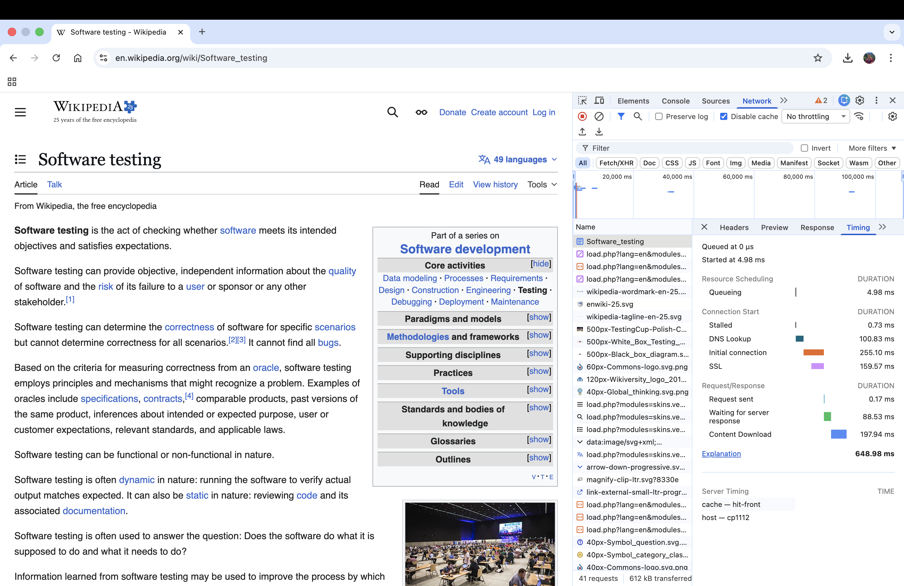
Probar con fibra óptica de 1 Gbps es un engaño. Vamos a simular cómo vive el usuario promedio en una red móvil inestable.
F5).¿Qué pasó?
Mirar peticiones individuales es útil para depurar, pero para dar un reporte a gerencia necesitamos Métricas de Experiencia de Usuario. Google definió los Core Web Vitals:
Generando tu Primer Reporte Lighthouse
Chrome tiene una herramienta de auditoría automatizada integrada.
Chrome tomará el control. Achicará la ventana (simulando un Moto G Power), estrangulará la CPU (simulando un procesador móvil lento) y simulará una red 4G. Al terminar, te dará un puntaje del 0 al 100.
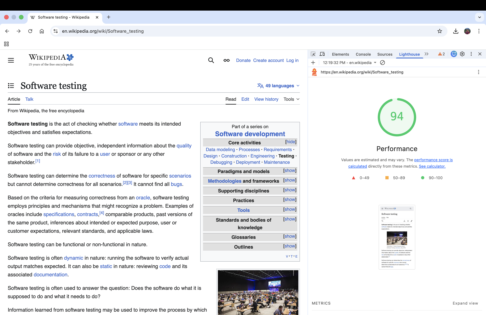
Interpretación del Reporte QA:
Baja hasta la sección "Opportunities" (Oportunidades) y "Diagnostics". Aquí es donde un SDET brilla. Encontrarás hallazgos como:
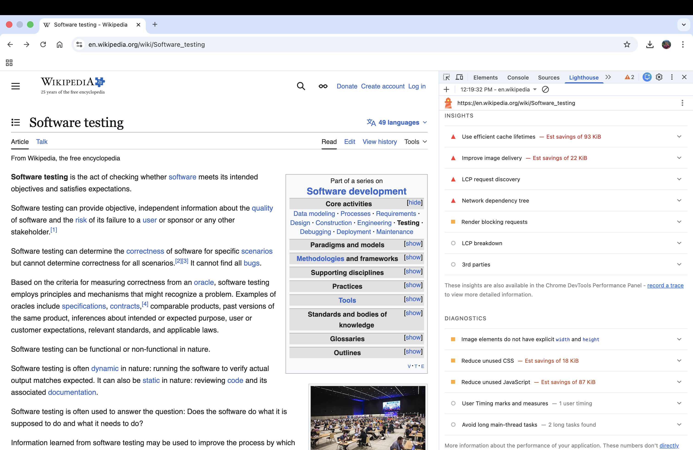
Como Tester Funcional, si haces clic y el menú se abre, el test "Pasa".
Como Tester de Rendimiento, si al hacer clic el menú tarda 400ms en abrirse (INP alto) porque el navegador está ocupado ejecutando un script de analíticas (Google Tag Manager, trackers), el test Falla.
Los Core Web Vitals son aserciones de calidad innegociables en 2026.
La red nos dice qué tan rápido llegan los datos, pero ahora vamos a ver qué hace el navegador con ellos.
Aquí dejamos de mirar los cables y abrimos el cerebro del navegador: el Motor V8 y el Motor de Renderizado (Blink). Si alguna vez has usado una página web que hace que los ventiladores de tu computadora suenen como un avión despegando, el problema está aquí.
"Si tu código JavaScript tarda 200 milisegundos en ejecutarse, tu pantalla estará congelada durante 200 milisegundos. A eso lo llamamos ‘Jank'."
Los navegadores web modernos tienen una limitación arquitectónica fundamental: JavaScript es de un solo hilo (Single-Threaded).
Este "Hilo Principal" (Main Thread) es el empleado del mes. Lo hace todo:
La regla de los 60 FPS (Cuadros por segundo):
Para que una animación o el scroll se vean fluidos, la pantalla debe actualizarse 60 veces por segundo.
Matemática simple: 1000 ms / 60 frames = 16.6 ms por frame.
Si un bloque de tu código JavaScript tarda 50ms en ejecutarse, el Hilo Principal está bloqueado. No puede dibujar los siguientes 3 cuadros. El usuario hace scroll y la pantalla "tironea". Esos son los temidos Long Tasks (Tareas Largas), y son los asesinos directos de la métrica INP (Interaction to Next Paint) que vimos en el módulo anterior.
Vamos a grabar y diseccionar el trabajo del Hilo Principal.
Interpretando el Flame Chart (Gráfico de Llamas)
Chrome generará un gráfico masivo. No te asustes.
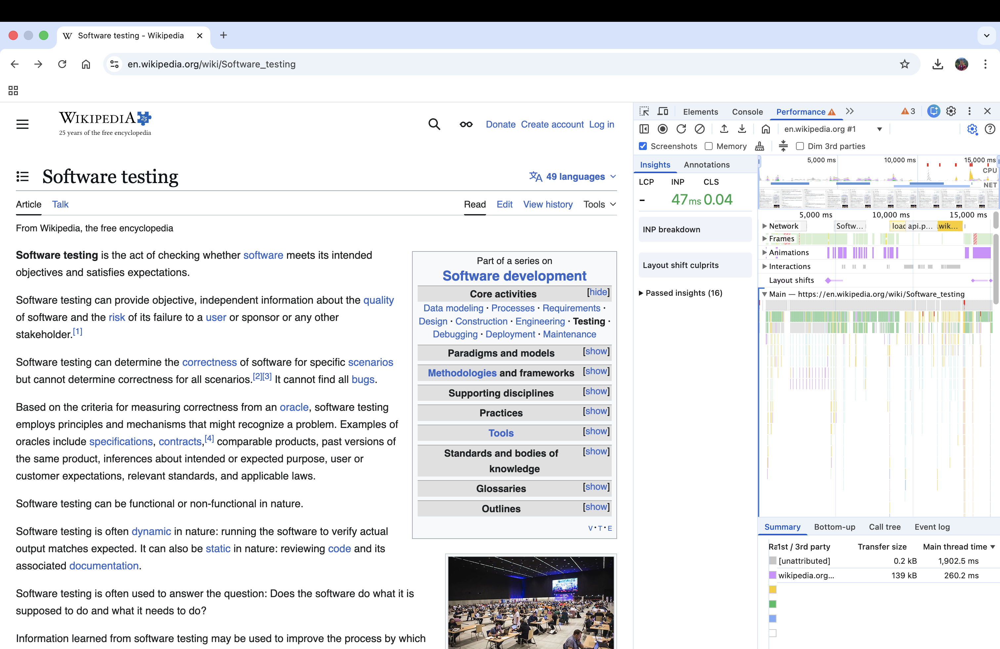
El Anti-Patrón: Layout Thrashing (Ataque de Diseño)
En tu análisis morado (Rendering), podrías ver muchas barras delgadas y repetitivas. Esto sucede cuando un desarrollador hace esto en un bucle:
element.offsetWidth).element.style.width = '100px').Al cambiar el ancho, el navegador invalida el diseño. Al leer el ancho en la siguiente línea, obligas al navegador a detener el JS y recalcular toda la pantalla sincrónicamente. Esto destruye el rendimiento.
JavaScript es un lenguaje con Garbage Collector (GC) o Recolector de Basura. Tú no liberas memoria manualmente (como en C++). El GC escanea la memoria periódicamente y elimina los objetos que ya no están referenciados por la aplicación.
¿Cómo ocurre una fuga entonces?
Ocurre cuando mantienes una referencia a un objeto que ya no necesitas, engañando al GC para que no lo borre.
Causas comunes:
window.addEventListener('resize', miFuncion), la página o el componente desaparece (ej. en React/Angular), pero nunca llamaste a removeEventListener.setInterval corriendo en el fondo para un componente destruido.element.remove()). Aunque ya no se ve, el navegador no puede liberar su memoria porque tu variable de JS lo sigue "sosteniendo".Si una pestaña de Chrome consume 100MB al abrir, y tras usarla por 20 minutos consume 1.5GB y crashea, tienes una fuga de memoria. Vamos a cazarla usando la Técnica de los 3 Snapshots.
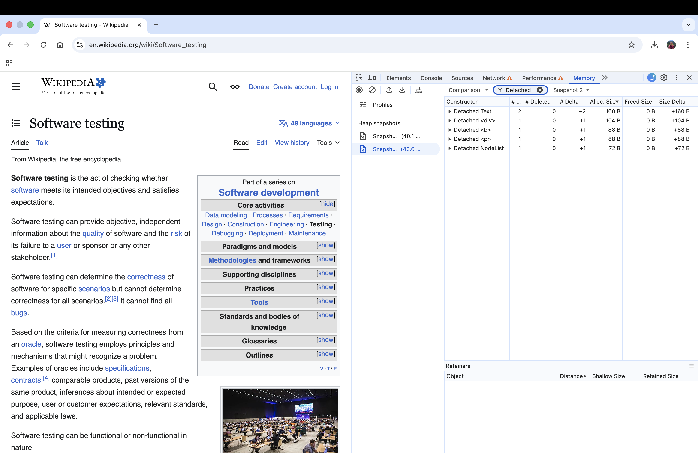
Analizando la Sangría de Memoria
Ahora selecciona el Snapshot 3.
El Diagnóstico del SDET:
Si ves filas que dicen Si haces clic en uno de esos elementos, la ventana inferior "Retainers" (Retenedores) te mostrará exactamente qué variable o archivo de JavaScript está impidiendo que ese elemento sea borrado (generalmente, un closure o un array global). Las fugas de memoria son asesinos silenciosos. No rompen tus pruebas E2E en Cypress porque tus tests duran 30 segundos y el navegador se cierra. Un usuario real deja la pestaña abierta todo el día. Como Ingenieros de Rendimiento, usar la pestaña Memory nos permite encontrar bugs que arruinarían la experiencia en producción después de horas de uso. ¡Cambio de ecosistema! Dejamos atrás el navegador web y nos adentramos en el mundo nativo. En esta sección vamos a abrir el capó de una aplicación Android. Si en la web un mal rendimiento significa una pantalla lenta, en móvil significa batería drenada, sobrecalentamiento y el temido mensaje "La aplicación no responde" (ANR). Para esta sección, utilizaremos la "En el desarrollo móvil, la CPU y la Red no son recursos infinitos; son la batería del usuario consumiéndose en tiempo real." Al igual que los navegadores, Android tiene un Main Thread (Hilo Principal), también conocido como el UI Thread (Hilo de Interfaz de Usuario). Su trabajo es dibujar la pantalla 60 o 120 veces por segundo (en los teléfonos modernos). Si ejecutas una operación matemática compleja, una consulta a base de datos (Room/SQLite) o una llamada de red en este hilo, la pantalla se congela. Vamos a conectar nuestra aplicación al monitor de signos vitales. Inmediatamente, verás un listado de Tasks para hacer profiling 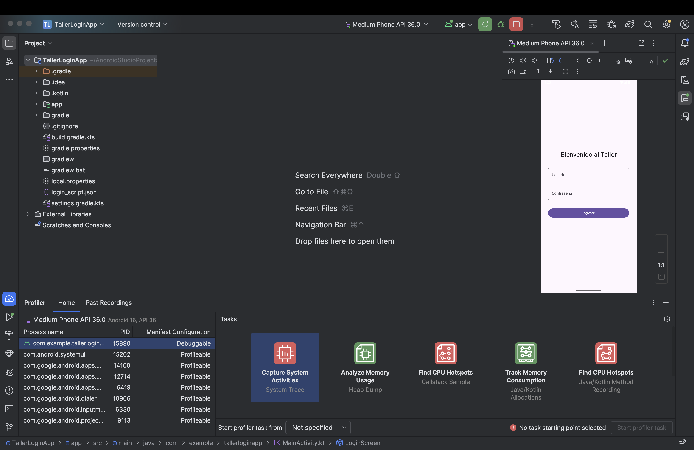 Vamos a investigar qué hace exactamente el procesador cuando el usuario interactúa con la app. Android Studio procesará los datos y te mostrará un panel complejo. 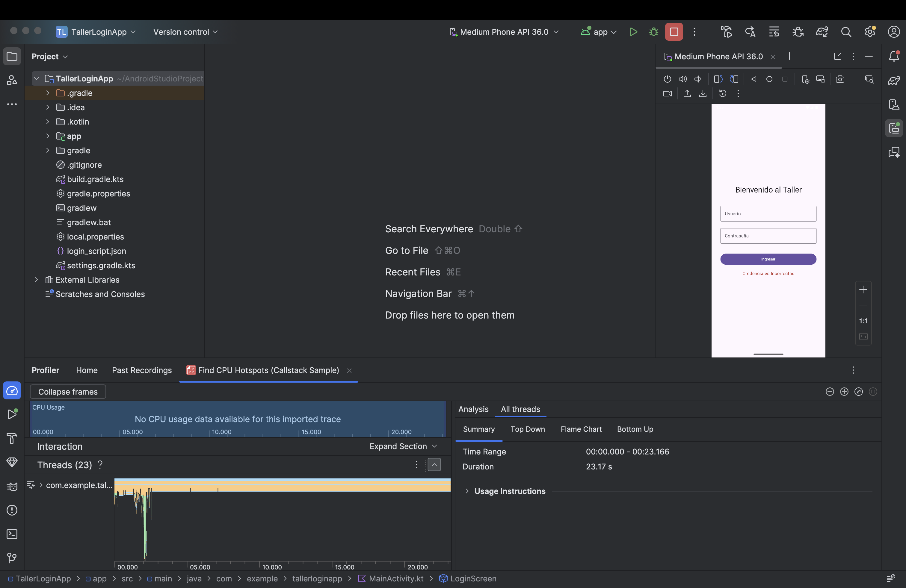 Interpretando el Flame Chart (Gráfico de Llamas Nativo) El análisis móvil es ligeramente distinto al web. Verás varias pestañas: Call Chart, Flame Chart, Top Down y Bottom Up. Ve a la pestaña Flame Chart. El Diagnóstico del SDET: Busca barras verdes muy anchas en el 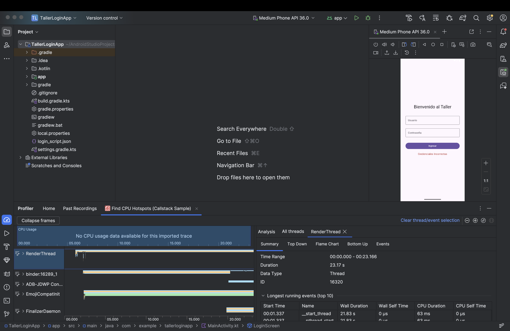 A diferencia de la web, donde basta con presionar (Nota didáctica: Nuestra Qué buscar en el Network Profiler: Si tu aplicación estuviera haciendo peticiones a un servidor backend, verías gráficos de barras en tiempo real. El Diagnóstico del SDET: Un error muy común en móvil es el "Over-fetching" (Traer datos de más). Ejemplo: Vas a la vista de "Perfil" y el Network Profiler muestra que la app descargó un JSON de 2MB. Revisas el Response y ves que el backend envió el historial completo de compras de los últimos 10 años del usuario, cuando la pantalla solo necesita mostrar el "Nombre" y la "Foto". Ese es un hallazgo de rendimiento crítico. Está consumiendo el plan de datos del usuario, agotando la batería para parsear el JSON y volviendo la app lenta. Las pruebas E2E con Appium o Espresso pueden pasar con éxito (en verde) incluso si la app descarga 10MB innecesarios o si la CPU llega al 100%. Usar el Profiler nos convierte en Ingenieros de Confiabilidad (Reliability Engineers). Aseguramos que la aplicación sea "ciudadana ejemplar" en el dispositivo del usuario. En esta sección, nos enfrentaremos al asesino silencioso más temido por los desarrolladores móviles: La Fuga de Memoria (Memory Leak). A diferencia de un error de sintaxis que hace que la app se cierre inmediatamente, una fuga de memoria es insidiosa. La app funciona perfectamente al principio, pero a medida que el usuario navega, la aplicación consume más y más RAM (memoria de acceso aleatorio) hasta que el sistema operativo Android dice: "Esta aplicación está asfixiando al teléfono" y la asesina sin piedad, lanzando un "Una aplicación que no libera lo que ya no usa, está destinada a ser eliminada por el sistema." En Android (Kotlin/Java), no liberamos memoria manualmente (como en C o C++). Tenemos un Garbage Collector (GC). ¿Cómo funciona el GC? El GC busca objetos en la memoria (Heap) que ya no tienen ninguna "referencia fuerte" (nadie los está usando ni apuntando a ellos) y los destruye para liberar espacio. ¿Cómo engañamos al GC (Memory Leak)? Las fugas ocurren cuando mantenemos una referencia a un objeto pesado (como un Resultado: El usuario abre la pantalla de Login 10 veces, y en lugar de tener 1 pantalla en memoria, tenemos 10 pantallas fantasma consumiendo RAM. Para cazar un monstruo, primero debemos crearlo. Vamos a modificar nuestra Abre tu proyecto en Android Studio y ve a Paso 1: Crear un Objeto Estático Peligroso En Kotlin, el equivalente a un Modifica tu Paso 2: Generar el Leak en Vivo Observa el gráfico de memoria azul. Si giraste la pantalla 20 veces, notarás que la línea base del gráfico está escalando como una escalera y nunca baja, incluso si dejas el teléfono quieto. ¡Tenemos una fuga confirmada! Vamos a averiguar exactamente qué línea de código es la culpable. Paso 3: Forzar el GC y Tomar la Foto Paso 4: Leyendo el Heap Dump Android Studio congelará la app por unos segundos, descargará toda la memoria RAM del teléfono y abrirá un panel complejo con miles de clases. Android Studio es lo suficientemente inteligente para decirte: "Oye, encontré 15 instancias de ¡BINGO! El Profiler te acaba de decir exactamente qué variable ( 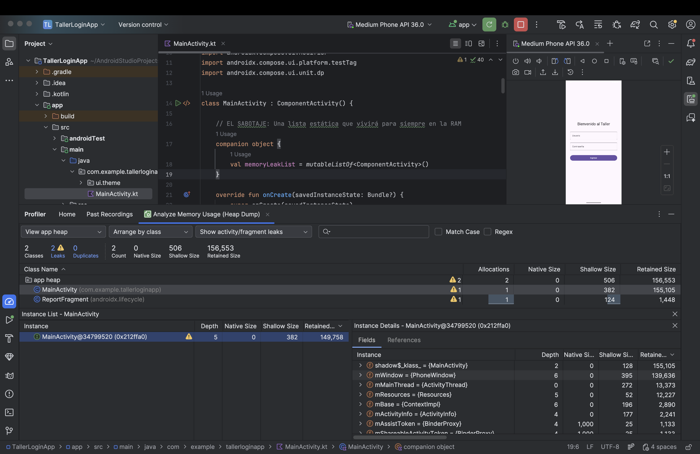 Leer Heap Dumps manualmente es como leer Matrix. Requiere mucha práctica. En el mundo real del QA Automation, usamos una librería llamada LeakCanary desarrollada por Square. Un Tester manual reporta: "La app se pone lenta y se cierra después de usarla 30 minutos". El desarrollador intentará reproducirlo y probablemente no lo logre, marcando el bug como "No reproducible". Un Ingeniero SDET usa el Memory Profiler, toma un Heap Dump, y adjunta la captura de pantalla del "Path to GC Root" en el ticket de Jira, señalando la variable estática exacta que el desarrollador olvidó limpiar. Esa es la diferencia entre reportar un síntoma y diagnosticar una enfermedad. ¡Cambiamos de frente de batalla! Hemos auditado el Frontend (Web) y el Client-Side (Mobile). Pero, ¿qué pasa cuando la aplicación de un usuario funciona perfectamente, pero hay 10,000 usuarios más haciendo exactamente lo mismo al mismo tiempo? Aquí nos convertiremos en directores de orquesta de tráfico web. Dejaremos de simular a un usuario con un cronómetro, y empezaremos a simular a un ejército entero usando Apache JMeter. "Un servidor web es como un restaurante. Si entra un cliente, la comida sale en 5 minutos. Si entran 500 clientes de golpe, la cocina se incendia." Apache JMeter es el estándar de la industria open-source para pruebas de carga. Está escrito 100% en Java. La Regla de Oro del SDET: JMeter NO es un navegador. A diferencia de Playwright o Cypress, JMeter no descarga imágenes (a menos que se lo pidas explícitamente), no renderiza CSS y, lo más importante, NO ejecuta JavaScript. JMeter opera a nivel de protocolo (HTTP/HTTPS, TCP, JDBC, etc.). Envía bytes y recibe bytes. Por lo tanto, sirve exclusivamente para medir el rendimiento del Servidor/Backend, no la experiencia visual del usuario. Para usar JMeter, necesitas tener instalado el JDK de Java (versión 11 o superior, idealmente 17 o 21). En JMeter, todo sigue una jerarquía de árbol. Vamos a construir un script para atacar una API pública de pruebas: dummyjson.com. Paso 1: El Batallón (Thread Group) El Thread Group define cuántos usuarios vamos a simular y cómo van a entrar al sistema. Paso 2: El Soldado (HTTP Request Sampler) El Sampler es la acción que hace el usuario (la petición web). Paso 3: La Pausa Humana (Timers y Think Time) Un error de novatos es crear peticiones en bucle sin pausas. Las computadoras pueden hacer 1000 requests por segundo, los humanos no. Los humanos leen la pantalla antes de hacer clic. A esto se le llama Think Time. Si no pones pausas, estás haciendo un ataque de Denegación de Servicio (DDOS), no una prueba de carga realista. Paso 4: El Control de Calidad (Assertions) Si tu servidor está colapsando, podría empezar a devolver mensajes de error rápidamente. Un error 500 (Internal Server Error) devuelto en 10ms es un fallo, no un éxito de rendimiento. JMeter, por defecto, marca en verde todo lo que sea Paso 5: Los Monitores (Listeners) Los Listeners nos permiten ver los resultados de la prueba. Nota: Los Listeners consumen mucha memoria RAM porque guardan la respuesta de cada petición. SOLO deben usarse en modo GUI para depurar el script con 1 o 2 usuarios. ¡NUNCA los dejes activos cuando corras una prueba real de miles de usuarios! Guarda tu Test Plan (ej: Diseñar un Test Plan es un ejercicio de modelado matemático. Si tu sistema real tiene usuarios que navegan un 80% del tiempo y compran un 20%, tu script de JMeter debe reflejar esa misma proporción usando Controladores Lógicos (If Controllers, Throughput Controllers). Una prueba de carga con el perfil de tráfico equivocado te dará resultados inútiles y falsas sensaciones de seguridad. 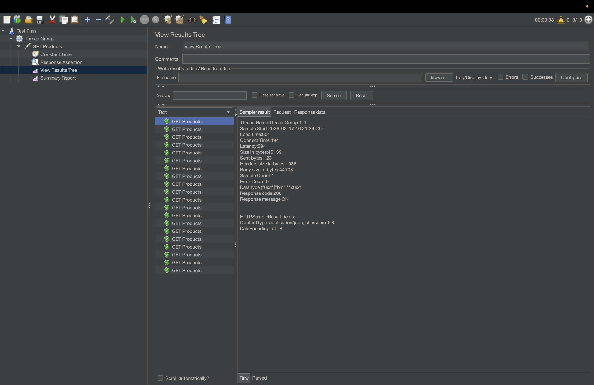 ¡Subimos de nivel! Nuestro script de la sección anterior funciona, pero tiene dos problemas graves que lo descalifican como una prueba de rendimiento profesional: Ahora vamos a convertir nuestro script en un arma de asedio dinámica y aprenderemos a ejecutarla como un verdadero DevOps. "Nunca pruebes la caché de un servidor pensando que estás probando su base de datos." Para estresar un servidor de verdad, cada usuario virtual (Thread) debe hacer algo diferente. Vamos a simular un escenario de Login masivo donde cada usuario usa credenciales distintas. Paso 1: El Archivo de Datos Crea un archivo de texto simple llamado Añade datos falsos separados por comas (sin espacios extra): (Nota: dummyjson.com tiene estos usuarios de prueba preconfigurados en su API). Paso 2: Inyectar el CSV en JMeter Paso 3: Usar las Variables (El POST Request) Si ejecutas esto ahora (con 3 usuarios), cada petición POST enviará credenciales diferentes. ¡Has vencido a la caché del servidor! Abre JMeter, mira la parte superior de la pantalla. Verás un texto que probablemente nunca leíste: "Don't use GUI mode for load testing !, only for Test creation and Test debugging." ¿Por qué? La interfaz gráfica de JMeter está escrita en Java Swing. Dibujar botones, actualizar tablas y renderizar el "View Results Tree" consume gigabytes de memoria RAM. Si lanzas 1,000 usuarios desde la GUI, JMeter sufrirá un Para pruebas reales, JMeter se ejecuta desde la terminal negra y fría. Esto libera el 99% de la RAM para usarla exclusivamente en generar tráfico de red. Anatomía del Comando Maestro: Verás en tu consola un resumen cada cierto tiempo informando cuántos usuarios están activos y si hay errores. 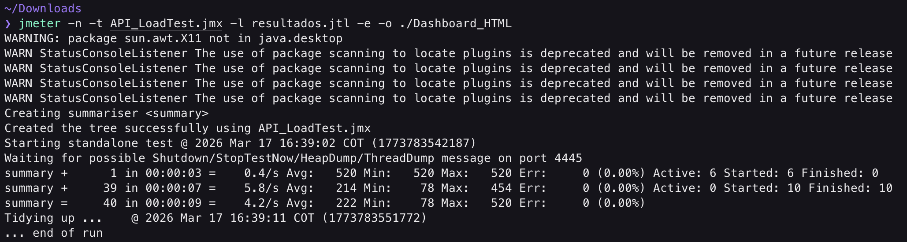 Nadie en la gerencia (CTOs, Product Managers) va a leer un archivo de texto Cuando termine tu prueba por terminal, ve a tu explorador de archivos. 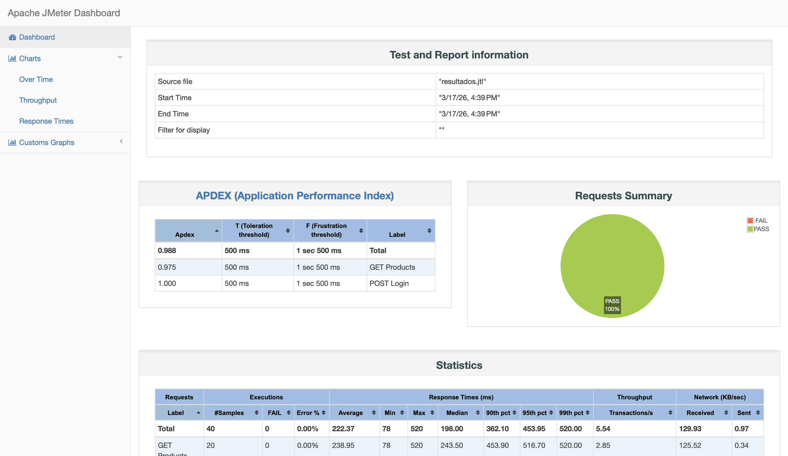 Métricas Críticas para Explicar a tu Jefe: En el Dashboard, navega por el menú de la izquierda para analizar: Un Tester Junior dice: "JMeter me arrojó 5,000 errores". Un SDET analiza el Dashboard y reporta: "El servidor soportó hasta 250 Threads concurrentes manteniendo un Apdex de 0.9. Sin embargo, al cruzar la barrera de los 300 Threads, la latencia de la base de datos se disparó, el P99 llegó a 4.5 segundos y los requests subsecuentes fallaron por Timeouts. El cuello de botella es la conexión al pool de base de datos." Hemos pasado a través de las redes del navegador, la memoria de los teléfonos y los hilos de ejecución de los servidores. Tienes las herramientas, conoces la teoría y sabes leer los gráficos. En esta sección, te enfrentarás a tres escenarios de crisis sacados directamente del día a día de un Ingeniero de Rendimiento (Performance SDET) en una empresa tecnológica top. Regla de Oro: Intenta resolver los desafíos utilizando las herramientas aprendidas antes de mirar las pistas o soluciones. En el mundo real, no hay un tutorial paso a paso para un servidor caído a las 3:00 AM. Contexto del Negocio: El equipo de Marketing acaba de lanzar una nueva Landing Page promocional. En sus potentes MacBooks en la oficina, la página carga al instante. Sin embargo, los usuarios que entran desde sus teléfonos móviles en la calle se están yendo porque la página se queda en blanco por varios segundos. Tu Misión: Restricciones y Pistas: Contexto del Negocio: Nuestra aplicación de Android tiene una calificación de 2.5 estrellas en la Google Play Store. Los comentarios dicen: "La app funciona bien, pero después de usarla un rato viendo productos, el teléfono se calienta y la app se cierra sola sin dar error". El equipo de desarrollo no puede reproducirlo haciendo un flujo rápido. Tu Misión: Simular un uso prolongado y demostrar matemáticamente que existe una Fuga de Memoria (Memory Leak). Restricciones y Pistas: Contexto del Negocio: Se acerca el "Black Friday" 2026. El CTO te llama y te hace una pregunta directa: "¿Cuántos usuarios simultáneos puede soportar nuestra API de productos antes de que la experiencia sea inaceptable (P90 mayor a 2 segundos) o el servidor colapse?" Tu Misión: Diseñar y ejecutar una Prueba de Estrés (Stress Test) progresiva en JMeter. Restricciones y Pistas: Ver Diagnóstico: Desafío 1 (Frontend Web) Al usar "Slow 4G" en la pestaña Network, el gráfico de Cascada (Waterfall) revelará líneas verdes o azules muy largas. Si encuentras un archivo Ver Diagnóstico: Desafío 2 (Mobile Leak) En el Heap Dump, al filtrar por la Actividad principal, verás que la columna "Count" dice 15 en lugar de 1. Al hacer clic en la instancia, el panel "References" mostrará que una variable estática (como un Diagnóstico SDET: "Evidencia de Memory Leak adjunta. La variable X está reteniendo el Contexto. Se sugiere usar un Ver Diagnóstico: Desafío 3 (Backend Quiebre) En el Dashboard HTML generado, navegas a Verás que durante el primer minuto (con 50 usuarios) el tiempo de respuesta era plano (~200ms). En el minuto 2:15, cuando los usuarios concurrentes llegaron a 150, la línea subió bruscamente a 3000ms y el APDEX cayó a 0.4. Diagnóstico SDET: "El punto de quiebre de la API actual es de 145 usuarios concurrentes. A partir de 150 usuarios, el P90 supera nuestro SLA de 2 segundos. Se requiere escalar los pods del servidor o agregar una capa de caché (Redis)". Este taller ha sido diseñado para proporcionar una base sólida en la automatización profesional, alineada con las mejores prácticas de la industria actual. Autor: Wilmer Arévalo Rol: Profesional en Proyectos de Investigación Departamento: Centro de Investigación, Facultad de Ingeniería, Universidad de los Andes Fecha de creación/actualización: Marzo de 2026 Todo el contenido de este taller está basado en la documentación oficial más reciente: Si tienen dudas al implementar esto en sus proyectos reales o encuentran problemas con la configuración:Detached HTMLDivElement y en la columna de "Delta" (Diferencia) dice +5, significa que al abrir y cerrar tu modal dejaste 5 elementos TallerLoginApp que construimos en el taller de Firebase, y la conectaremos al escáner médico más avanzado de Google: El Android Studio Profiler.Teoría: El Hilo de UI y el Fantasma del ANR
Práctica: Setup y Conexión al Profiler
TallerLoginApp.com.example.tallerloginapp).El CPU Profiler: Cazando el Código Lento
main thread. Si ves que el método validarCredenciales() es una barra gigante, acabas de encontrar el cuello de botella. En una app real, podrías descubrir que un desarrollador está parseando un JSON de 5MB en el Hilo de UI en lugar de usar una Corrutina de Kotlin (Dispatchers.IO) en segundo plano.El Network Inspector (Intercepción de Red)
F12 para ver las peticiones de red, en las apps móviles el tráfico está oculto e intercederlo externamente requiere proxys complejos (como Charles o Wireshark). Sin embargo, el Profiler de Android nos da visión de rayos X interna.
TallerLoginApp no hace peticiones a internet reales aún. Imagina que agregamos una llamada a una API usando Retrofit/OkHttp).
OutOfMemoryError (OOM).Teoría: El Ciclo de Vida y el Recolector de Basura (GC)
Activity, un Context o un Bitmap de una imagen de 4K) mucho tiempo después de que el usuario ya cerró esa pantalla. Como nuestra variable sigue "sosteniendo" la pantalla, el GC no puede borrarla.Práctica: El Sabotaje (Inyectando un Leak Intencional)
TallerLoginApp para que filtre memoria de forma agresiva.MainActivity.kt.static de Java es un companion object. Estos objetos viven durante toda la vida útil de la aplicación, no de la pantalla.MainActivity agregando este bloque dentro de la clase, pero fuera del onCreate:class MainActivity : ComponentActivity() {
// EL SABOTAJE: Una lista estática que vivirá para siempre en la RAM
companion object {
val memoryLeakList = mutableListOf<ComponentActivity>()
}
override fun onCreate(savedInstanceState: Bundle?) {
super.onCreate(savedInstanceState)
// CULPABLE: Cada vez que se crea esta pantalla (ej. al rotar el teléfono),
// nos guardamos a nosotros mismos en la lista estática.
// Nunca nos borramos de la lista al destruir la pantalla (onDestroy).
memoryLeakList.add(this)
setContent {
// ... (tu código Compose de LoginScreen) ...
}
}
}
Activity actual y crea uno nuevo.Activity en nuestra memoryLeakList estática, cada vez que giras, agregamos una pantalla entera (con todos sus botones y textos) a la memoria permanente.Análisis Forense: Capturando el Heap Dump
Activity/Fragment) o busca el filtro de advertencias (un triángulo amarillo ⚠️).MainActivity en la memoria, pero solo debería haber 1 o 0. Esto es una fuga".
MainActivity en la lista.memoryLeakList) en qué clase (Companion object) está causando que el teléfono se quede sin memoria.Herramientas de Industria: LeakCanary (Bonus)
Teoría: ¿Qué es JMeter y qué NO es?
Práctica: Setup y Tuning (El Secreto de los Profesionales)
OutOfMemoryError antes que tu servidor.
.bat y para Mac es .sh.# Para Mac
JVM_ARGS="-Xms1g -Xmx4g" ./jmeter.sh
Arquitectura de un Test Plan (Plan de Pruebas)
10 (Vamos a simular 10 usuarios concurrentes).5 (JMeter tardará 5 segundos en meter a los 10 usuarios. Es decir, entrarán 2 usuarios por segundo. Esto evita un ataque DDOS instantáneo).2 (Cada usuario hará el flujo 2 veces. Total de peticiones: 10 x 2 = 20).
GET Products.
httpsdummyjson.comGET/products
2000 (milisegundos).
2xx o 3xx. Debemos ser más estrictos.
Response CodeEqualsJSON Assertion para verificar que el nodo $.products exista en la respuesta. Así validamos que la API no solo no falló, sino que trajo la data correcta bajo presión.
Ejecución (Prueba de Humo Local)
API_LoadTest.jmx).
Teoría y Práctica: Data Driven Testing (CSV Data Set Config)
usuarios.csv en la misma carpeta donde guardaste tu script .jmx.emilys,emilyspass
michaelw,michaelwpass
sophiab,sophiabpass
API_LoadTest.jmx en la GUI de JMeter.
usuarios.csv (Si está en la misma carpeta, basta con el nombre).USER,PASS (Esto creará dos variables en JMeter).False (Porque no le pusimos cabeceras a nuestro CSV).True (Si hay más Threads que filas en el CSV, volverá a empezar desde la primera línea).
POST Login.
POST/auth/login${VARIABLE}:{
"username": "${USER}",
"password": "${PASS}"
}
POST Login > Add > Config Element > HTTP Header Manager. Añade una fila:
Content-Typeapplication/jsonEl Pecado Capital de JMeter
OutOfMemoryError. La prueba se detendrá, y tú creerás que el servidor falló, cuando en realidad tu herramienta de pruebas fue la que colapsó.Ejecución Profesional: Non-GUI Mode (CLI)
API_LoadTest.jmx).jmeter -n -t API_LoadTest.jmx -l resultados.jtl -e -o ./Dashboard_HTML
-n (Non-GUI): Le dice a JMeter que no abra la interfaz gráfica.-t API_LoadTest.jmx: Especifica el Test Plan a ejecutar.-l resultados.jtl: JMeter guardará cada petición, su latencia y su código de respuesta en un archivo CSV ligero (.jtl).-e: Le indica a JMeter que genere un reporte final cuando acabe.-o ./Dashboard_HTML: La carpeta (DEBE estar vacía o no existir) donde volcará el reporte ejecutivo.El Reporte Ejecutivo (HTML Dashboard)
.jtl. Ellos necesitan gráficos.
Dashboard_HTML.index.html. Se abrirá en tu navegador un dashboard interactivo de nivel profesional.
1.0 es excelente (todos los requests fueron rápidos). < 0.5 es inaceptable.Desafío 1: El Sabotaje de Marketing (Frontend Web)
cnn.com, amazon.com o una web de prueba que elijas).
Desafío 2: El Asesino Silencioso (Mobile Android)
TallerLoginApp con el leak que inyectamos en una sección anterior).
Activity o marca la casilla "Show Activity/Fragment Leaks". Debes encontrar el "Path to GC Root" para demostrar qué variable retiene la pantalla.Desafío 3: El Punto de Quiebre (Backend Stress Testing)
dummyjson.com/products (o cualquier otra API REST pública permitida).
Thread Group normal, investiga cómo usar un Stepping Thread Group (con plugins) o simplemente configura el Ramp-up period para que los usuarios entren gradualmente a lo largo de 3 minutos.jmeter -n -t stress_test.jmx -l resultados.jtl -e -o ./ReporteFinalSoluciones
.js de 2MB bloqueando el renderizado (Render-blocking), tu diagnóstico como SDET es: "El script de analíticas X está bloqueando el Hilo Principal por 3.5 segundos en redes móviles. Solución propuesta: Añadir los atributos defer o async a la etiqueta script, o reducir el tamaño del bundle".Companion Object en Kotlin o un Singleton) tiene una referencia fuerte (Strong Reference) al Context de la Actividad.WeakReference o limpiar la lista en el método onDestroy()".Charts > Response Times > Response Times Over Time.Créditos
Referencias Oficiales
Soporte y Dudas